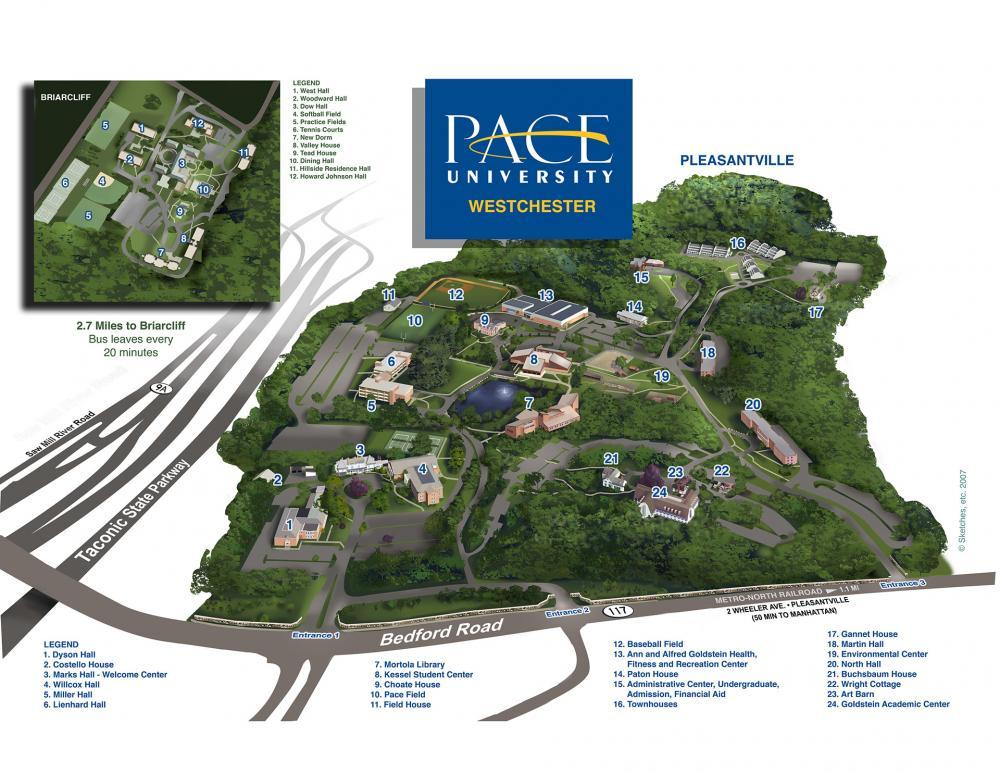
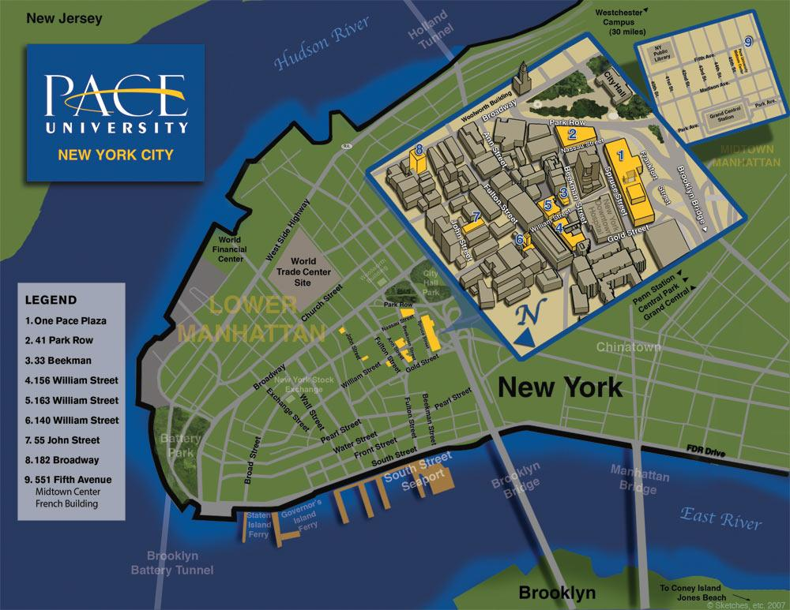
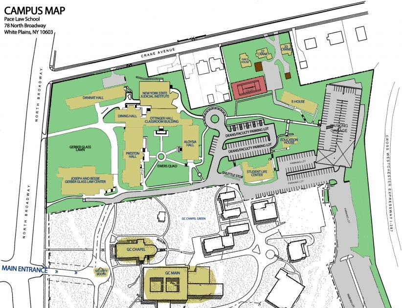

Who we are
In 1906, the Pace Brothers started a one room accounting class in NYC. 117 years later, Pace is still going strong!
Pleasantville Campus
The Pleasantville Campus is located at 861 Bedford Road Pleasantville, NY 10570–2799 Phone: (914) 773–3200
Manhattan Campus
The Manhattan Campus is located at One Pace Plaza New York City, NY 10038–1598 Phone: (212) 346–1200
White Plains Campus
The White Plains Campus is located at 78 North Broadway White Plains, NY 10603 Phone: (914) 422–4300
